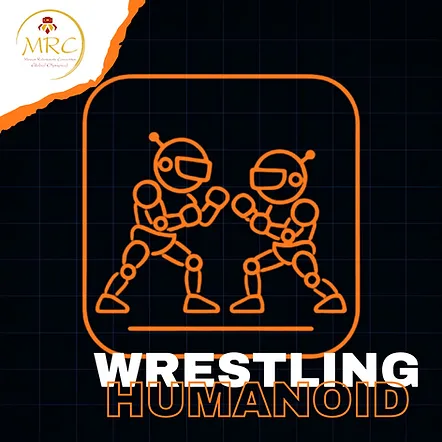
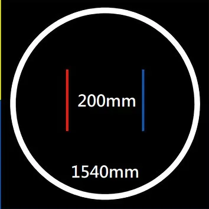

青少年組 / 青年組 (14至18歲 / 國中及高中)
成人組 (18歲以上 / 大學生及個人)
⚠️ 本項目僅設一個級別：
所有類型的機器人同場競技。
🚨 兩個年齡組別合併比賽。
機器人運動員的目標是在專門設計的摔角賽道上將對手推出場外，並被判定為獲勝者。
每回合有 ... 分鐘的時間限制。
摔角作為一項運動，不需要傷害或摧毀對手，僅需將其移出賽道即可。在這種情況下，違反核心價值的機器人運動員將被淘汰，對手將被宣佈為獲勝者。
1. 隊伍組成
1.1 比賽以隊伍而非個人名義參加。
1.2. 每隊可由二 (2) 人或以上組成。
1.3. 隊伍指定其中兩名成員為其機器人運動員的主要教練，負責與組委會和裁判溝通、技術檢查流程以及在比賽期間操控機器人運動員。
2. 機器人運動員要求
2.1. 一般機器人規格
1. 允許任何機器人設計，但不得違反第 2.2 節之限制。
2. 機器人必須能放入邊長 20 公分（200 公釐）的正方形內。機器人最大高度為 50 公分（500 公釐）。
3. 機器人在比賽開始時的總質量必須低於 3 公斤（3000 公克）。
4. 機器人必須是雙足行走的仿人機器人，且在行走時必須轉移重心以保持平衡。
5. 所有機器人必須是自主運作的。只要所有組件都包含在機器人體內，且該機制不與外部控制系統（人為、機器或其他）互動，則可使用任何控制機制。
6. 機器人必須在外部機殼的顯眼位置顯示由主辦單位提供的編號。此編號用於裁判識別機器人，可在隊伍資料夾中找到（詳見附錄）。
2.2. 機器人限制
1. 行走時，一隻腳應離開地面，而另一隻腳平衡機器人。
2. 行走時，機器人用於平衡的那條腿的膝關節角度必須大於 90 度。在任何時候，若非如此，則該機器人將不被視為在行走。
3. 只要滿足以下所有條件，腿部可以有任何形狀和形式：
a. 機器人腳部定義為機器人與競賽場地表面（地面）接觸的部分。
4. 腳部的最大長度（尺寸）必須小於機器人伸展腿長度的 50%。腿長定義為機器人腳部接觸地面點與腿部連接機器人上軀幹之軸心之間的距離。
5. 腳部最大長度必須小於 20 公分（200 公釐）。
6. 當機器人站立或行走時，左右腿周圍的矩形邊框不得重疊。
7. 機器人必須有 2 隻手臂。每隻伸展手臂的長度不得超過伸展腿的長度。
8. 機器人必須有一個頭部。
9. 不允許使用干擾裝置，例如旨在飽和對手紅外線感測器的紅外線 LED。
10. 不允許使用可能破壞或損壞比賽場地的組件。不得使用旨在傷害對手機器人或其操作員的零件。正常的推擠不被視為意圖傷害。
11. 不允許使用可儲存液體、粉末、氣體或其他物質以向對手投擲的裝置。
12. 不允許使用任何類型的可燃裝置。
13. 不允許使用向對手投擲物品的裝置。
14. 不允許使用黏性物質來增加附著力。
15. 機器人必須在比賽開始前保持靜止 5 秒鐘。5 秒後機器人方可移動。
16. 機器人可透過遙控器或機器人上的按鈕啟動。
2.3 機器人運動員的技術檢查
1. 初次技術檢查將於比賽當日，由主辦單位決定之地點與時間進行。
2. 技術檢查在機器人運動員可能參與的每個階段（預賽、資格賽、決賽）開始前進行。
3. 隊伍若未能按時將其機器人運動員送達技術檢查，將導致該隊伍自動被取消比賽資格。
4. 僅機器人運動員的教練負責將隊伍的機器人運動員送交技術檢查。
5. 技術檢查包括根據上述「機器人運動員」章節中的條件測試機器人運動員。若未達規格，將不被接受參賽，並自動取消其在該項目的資格。
6. 在技術檢查期間，機器人運動員的教練必須向檢查委員會展示程式。
3. 賽道設計
3.1. 賽道為圓形。直徑為 150 公分，顏色為黑色。
3.2. 黑色表面定義為比賽表面，周圍環繞白色邊界線。
3.3. 賽道規格
1. 賽道由 5 公釐厚的木材製成，塗成黑色，直徑為 150 公分。
2. 輪廓線標示為寬度 5 公分（50 公釐）的白線。
3. 賽道應放置在地板上，高度為 5 公分（50 公釐）。
4. 所有給定尺寸允許有 5% 的公差。
3.4. 在比賽開始前，將有時間讓機器人運動員進行測試，其教練可依比賽當日公布之時間表進行測試。
3.5. 測試結束後，在每輪比賽即將開始前，機器人運動員將被隔離。

4. 比賽程序
1. 一場比賽由多個回合組成，總時間為 2 分鐘，除非經裁判延長。比賽的額外時間不超過 1 分鐘。
2. 若在時限內雙方均未獲勝，可進行延長賽，首先得分之隊伍獲勝。或者，勝負可由裁判判定、抽籤或重賽決定。
3. 若機器人卡住，將適用下方所列規則。
4. 若兩台機器人中有一台未啟動，將重新啟動。若在此次重新啟動中同一台機器人仍未啟動，則由移動的機器人獲勝。
4.1 比賽流程
1. 機器人將根據參賽人數分組。比賽將以小組/半準決賽/決賽制度進行，以確保每台機器人有平等的比賽回合。裁判的決定必須一致且為最終決定。對這些決定提出異議將導致取消資格。
2. 隊伍配對將在官方比賽開始後，以隨機抽籤方式決定。抽籤結果將公布於網站上供所有參與者查閱。通過小組賽的隊伍將進行半準決賽/半決賽/決賽。若參賽人數不足以進行小組賽，比賽將從一開始就採用金字塔賽制。金字塔中的位置將隨機決定。
4. 在整個比賽期間，每隊有權要求 2 次暫停，每次 5 分鐘。僅在機械問題時，且經裁判批准，才允許其他暫停。此規則僅在比賽期間適用。
5. 在批准之前，所有隊伍將留在為他們保留的區域。隊伍僅在被叫到比賽場地時才可離開該區域。每隊將在需要前往場地附近的準備區時，由比賽裁判叫號。
6. 批准後，接下來將出發的隊伍將留在比賽場地的準備區。僅在裁判同意或僅為維修時，隊伍才可離開此區域，並必須在裁判規定的時間返回。若隊伍在第一次叫號時未返回，將視為放棄比賽。
7. 比賽結束後，隊伍必須返回為其保留的區域。
8. 每隊有責任遵守公布在網站和隊伍區域的原始賽程。請勿遲到，我們不會等待！！！
若隊伍在 5 分鐘內未到場，該機器人運動員將被取消資格！！！
9. 每隊將有 2 名機器人運動員教練。僅允許教練進入準備區或比賽區域。其餘隊員將留在隊伍區域或從觀眾席觀看比賽。
10. 機器人運動員教練必須佩戴手套和護目鏡。防護裝備在比賽場地上，賽前和賽中皆為強制性。防護裝備將在檢查時進行確認。
11. 缺乏全部或部分防護裝備將成為隊伍被取消資格的理由。
4.2. 機器人運動員要求
每隊必須通過技術檢查階段，才能使用其機器人參加比賽。
階段如下：
1. 透過將一個 20.3 公分 x 20.3 公分（203 公釐 x 203 公釐）無底的方盒/框架放置在機器人上方，檢查機器人尺寸。機器人高度最大為 50.3 公分（503 公釐）。
2. 在數位秤上秤重機器人。最大值應為 3005 公克。
3. 檢查 5 秒延遲。
4. 檢查機器人運動員教練是否備有防護裝備。
5. 將一個獨特的編號貼在機器人的外部機殼上。
6. 向技術委員會展示程式。
7. 檢查通過後，機器人將不受限制。他們可以繼續進行賽道測試和編程，但不得改變機器人的尺寸。（注意：您的運動員將在比賽前被測量尺寸是否正確）。
4.3. 開始、停止、繼續、結束比賽
1. 機器人擺放
根據裁判的指示，前兩支隊伍接近擂台，將他們的機器人放置在摔角地板上。操作員將同時將機器人放置在比賽場地上。裁判將發出信號。放置後，機器人不得再移動。機器人運動員被放置在比賽場地上後，其教練必須撤退到標示的安全區域。
機器人運動員面對面擺放（彼此相對）。它們之間相距 50 公分。
裁判將檢查機器人是否就緒。若擺放不正確，將重新擺放機器人。
2. 比賽開始
比賽在裁判下令時開始。在開始命令下，操作員將啟動機器人，機器人必須在 5 秒延遲後移動。機器人教練必須在安全區域內才能啟動。若教練未經裁判許可離開場地，該隊可能失去一分或被取消資格。
3. 中斷、繼續比賽。
比賽在裁判宣布時暫停和繼續。裁判宣布何時可將機器人放置在場地上、機器人教練何時撤退到安全區域，以及何時可將機器人從場地上移開。
4. 結束
比賽在裁判宣布時結束。兩隊將機器人運動員從比賽場地區域移開。機器人取回後，判決即為最終決定，不得提出異議。
5. 比賽時間
1. 持續時間
一場比賽總時間為 4 分鐘，由裁判下令開始和結束。
2. 延長賽
若裁判要求，延長賽最多持續 1 分鐘。
4.4 計分
擊倒 (Knockdown)。當機器人被對手擊倒時，即發生擊倒。對手得分加 2 分。
滑倒 (Slipdown)。當機器人自己摔倒時，即發生滑倒。對手得分加 1 分。
出界 (Ringout)。當機器人的任何部分接觸到競賽場地外的表面時，裁判吹哨。對手得分加 3 分。
在上述所有情況下，機器人運動員的教練將獲得裁判許可，將機器人正面朝下放置在比賽場地上，且無進一步罰則，前提是它能在 10 秒倒數內站起來。
擊敗 (Knock Out)。當機器人未能在 10 秒倒數內站起來時，即發生擊敗。此外，當機器人未能在 10 秒倒數內移動或行走時，亦發生擊敗。當宣判擊敗時，比賽立即終止，並判給對手 4 分。
所有分數將在每回合中加總給對手。
若機器人之間超過 15 秒未相互接觸且無明確戰鬥意圖，裁判可暫停比賽。
4.5. 勝負判定
1. 得分最高的機器人將被宣佈為該場比賽的獲勝者。
2. 發生擊敗時。
3. 若最終得分平手，裁判將根據機器人運動員的戰術、攻擊性和活躍度來判定勝利歸屬。
4. 若雙方機器人均未得分，裁判可判定該場比賽無獲勝者。
4.6 在以下情況下，比賽將被放棄並重新開始：
1. 若兩台機器人中有一台未啟動，將進行重新啟動。若在重新啟動時同一台機器人仍未啟動，則由移動的機器人獲得該分數。
2. 若機器人混淆或在彼此周圍徘徊 10 秒且無明顯進展，將進行重新啟動。若在重新啟動後情況重複，則由移動最多且表現出戰鬥意願的機器人獲勝。若在重新啟動後情況重複，則由移動最快且攻擊最多的機器人獲得該回合勝利。
3. 兩台機器人都移動，但無進展，或同時停下並保持停止 5 秒且未相互接觸。然而，若一台機器人先停止移動，5 秒後將被宣判無戰鬥意願。在此情況下，對手將獲得 1 分，即使對手也停止了。若兩台機器人都在移動，且不清楚是否有進展，裁判可將時間限制延長至 30 秒。
4. 若兩台機器人幾乎同時觸及外部比賽區域（白線），且無法判定誰先觸及，則進行重賽。
重要事項：若在上述任何情況下無法宣佈獲勝者，將適用屆時宣布的特殊規則。
4.7. 維修、修改、意外中斷
若機器人在比賽中故障，裁判將給予 1 分鐘的維修時間。主辦單位可將此時間延長至 5 分鐘。維修將在助理裁判的監督下進行，以避免未經授權的更換機器人單元。若機器人無法在指定時間內修復，則由對手機器人贏得比賽，但該隊可在下一場比賽前繼續維修，在此情況下需在裁判/組委會成員的監督下進行。
如有必要，可在比賽期間更換故障零件和為電池充電。若在檢查通過後對機器人進行任何修改，機器人必須再次通過技術檢查階段。
4.8. 違規
1. 執行上述各節所述任何行為的選手將被宣佈違反這些規則。
4.9. 輕微犯規
輕微犯規將受到警告處罰，並在以下情況發生時宣佈：
1. 參賽者在比賽期間進入擂台，除非裁判在得分後暫停比賽且參賽者前去取回機器人。
2. 無正當理由要求暫停比賽。
3. 反對裁判的判決。
4. 採取任何違反比賽公平競爭精神的行為。
5. 教練在未通知比賽裁判或助理裁判離開原因的情況下離開準備區。
6. 若一支隊伍收到 2 次警告，將判給對手隊伍 1 分，或該隊伍可能被取消資格，取決於其所採取行動的嚴重程度。
7. 若機器人在 5 秒延遲之前啟動，對手得 1 分。
5. 異議聲明
5.1. 不對裁判的決定提出異議。機器人運動員的教練若對這些規則的適用有疑問，可在比賽結束前向委員會提交異議。
5.2 規則的靈活性
只要尊重規則的概念和基本原則，這些規則將足夠靈活，以適應參賽者數量和比賽內容的變化。主辦單位可對規則進行修訂或廢除，只要在活動前公布，並在整個活動期間保持一致。